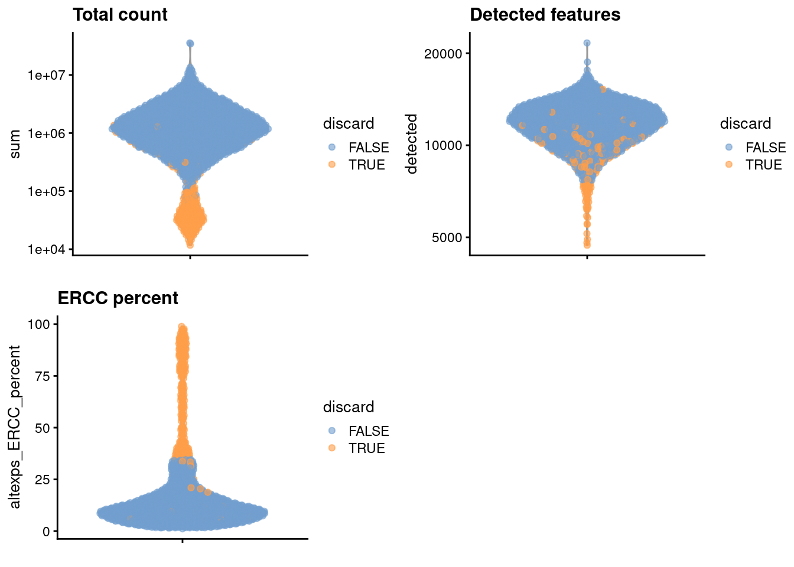
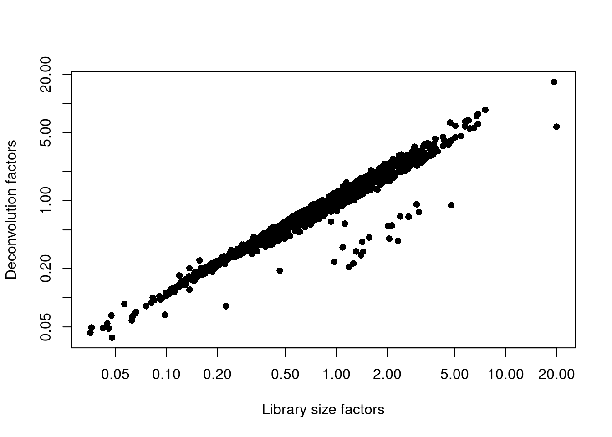
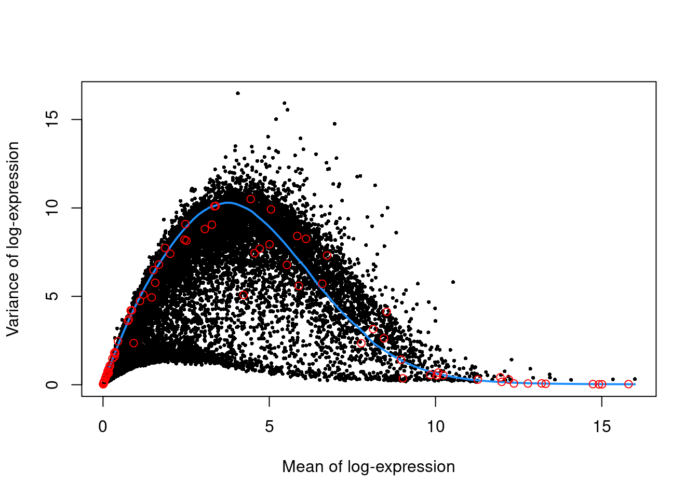
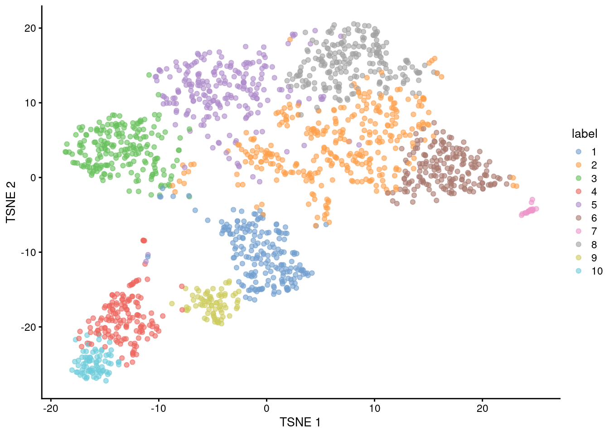
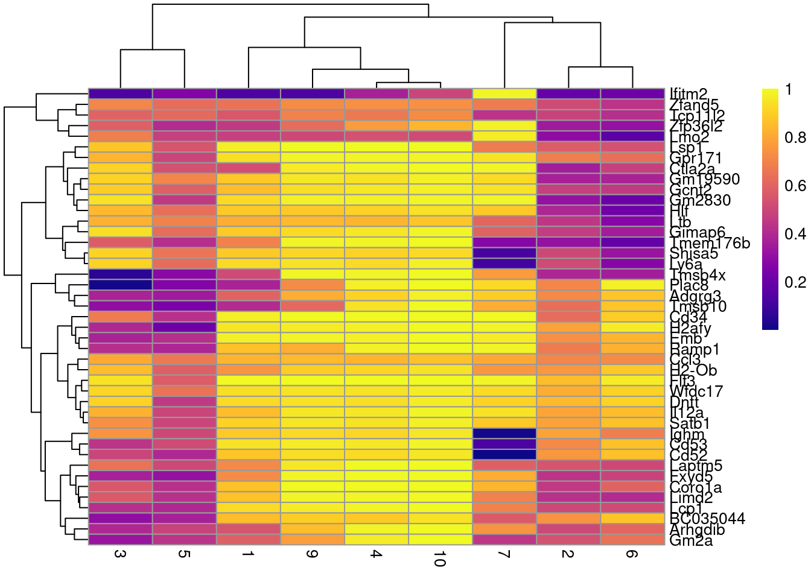

Last updated: 2025-02-24
Checks: 7 0
Knit directory: muse/
This reproducible R Markdown analysis was created with workflowr (version 1.7.1). The Checks tab describes the reproducibility checks that were applied when the results were created. The Past versions tab lists the development history.
Great! Since the R Markdown file has been committed to the Git repository, you know the exact version of the code that produced these results.
Great job! The global environment was empty. Objects defined in the global environment can affect the analysis in your R Markdown file in unknown ways. For reproduciblity it’s best to always run the code in an empty environment.
The command set.seed(20200712) was run prior to running
the code in the R Markdown file. Setting a seed ensures that any results
that rely on randomness, e.g. subsampling or permutations, are
reproducible.
Great job! Recording the operating system, R version, and package versions is critical for reproducibility.
Nice! There were no cached chunks for this analysis, so you can be confident that you successfully produced the results during this run.
Great job! Using relative paths to the files within your workflowr project makes it easier to run your code on other machines.
Great! You are using Git for version control. Tracking code development and connecting the code version to the results is critical for reproducibility.
The results in this page were generated with repository version 8c9397f. See the Past versions tab to see a history of the changes made to the R Markdown and HTML files.
Note that you need to be careful to ensure that all relevant files for
the analysis have been committed to Git prior to generating the results
(you can use wflow_publish or
wflow_git_commit). workflowr only checks the R Markdown
file, but you know if there are other scripts or data files that it
depends on. Below is the status of the Git repository when the results
were generated:
Ignored files:
Ignored: .Rproj.user/
Ignored: data/1M_neurons_filtered_gene_bc_matrices_h5.h5
Ignored: data/293t/
Ignored: data/293t_3t3_filtered_gene_bc_matrices.tar.gz
Ignored: data/293t_filtered_gene_bc_matrices.tar.gz
Ignored: data/5k_Human_Donor1_PBMC_3p_gem-x_5k_Human_Donor1_PBMC_3p_gem-x_count_sample_filtered_feature_bc_matrix.h5
Ignored: data/5k_Human_Donor2_PBMC_3p_gem-x_5k_Human_Donor2_PBMC_3p_gem-x_count_sample_filtered_feature_bc_matrix.h5
Ignored: data/5k_Human_Donor3_PBMC_3p_gem-x_5k_Human_Donor3_PBMC_3p_gem-x_count_sample_filtered_feature_bc_matrix.h5
Ignored: data/5k_Human_Donor4_PBMC_3p_gem-x_5k_Human_Donor4_PBMC_3p_gem-x_count_sample_filtered_feature_bc_matrix.h5
Ignored: data/Parent_SC3v3_Human_Glioblastoma_filtered_feature_bc_matrix.tar.gz
Ignored: data/brain_counts/
Ignored: data/cl.obo
Ignored: data/cl.owl
Ignored: data/jurkat/
Ignored: data/jurkat:293t_50:50_filtered_gene_bc_matrices.tar.gz
Ignored: data/jurkat_293t/
Ignored: data/jurkat_filtered_gene_bc_matrices.tar.gz
Ignored: data/pbmc20k/
Ignored: data/pbmc20k_seurat/
Ignored: data/pbmc3k/
Ignored: data/pbmc4k_filtered_gene_bc_matrices.tar.gz
Ignored: data/refdata-gex-GRCh38-2020-A.tar.gz
Ignored: data/seurat_1m_neuron.rds
Ignored: data/t_3k_filtered_gene_bc_matrices.tar.gz
Ignored: r_packages_4.4.1/
Note that any generated files, e.g. HTML, png, CSS, etc., are not included in this status report because it is ok for generated content to have uncommitted changes.
These are the previous versions of the repository in which changes were
made to the R Markdown (analysis/trajectory.Rmd) and HTML
(docs/trajectory.html) files. If you’ve configured a remote
Git repository (see ?wflow_git_remote), click on the
hyperlinks in the table below to view the files as they were in that
past version.
| File | Version | Author | Date | Message |
|---|---|---|---|---|
| Rmd | 8c9397f | Dave Tang | 2025-02-24 | Downstream processing |
| html | fcd8cb2 | Dave Tang | 2025-02-23 | Build site. |
| Rmd | 4a2d928 | Dave Tang | 2025-02-23 | Trajectory analysis |
Install dependencies.
if (!require("BiocManager", quietly = TRUE))
install.packages("BiocManager")
BiocManager::install("scRNAseq")
BiocManager::install("AnnotationHub")
BiocManager::install("scater")Mouse haematopoietic stem cell (HSC) dataset generated with Smart-seq2 (Nestorowa et al. 2016).
suppressPackageStartupMessages(library(scRNAseq))
sce.nest <- NestorowaHSCData()loading from cacherequire("ensembldb")suppressPackageStartupMessages(library(AnnotationHub))
ens.mm.v97 <- AnnotationHub()[["AH73905"]]loading from cacheanno <- select(ens.mm.v97, keys=rownames(sce.nest),
keytype="GENEID", columns=c("SYMBOL", "SEQNAME"))
rowData(sce.nest) <- anno[match(rownames(sce.nest), anno$GENEID),]
sce.nestclass: SingleCellExperiment
dim: 46078 1920
metadata(0):
assays(1): counts
rownames(46078): ENSMUSG00000000001 ENSMUSG00000000003 ...
ENSMUSG00000107391 ENSMUSG00000107392
rowData names(3): GENEID SYMBOL SEQNAME
colnames(1920): HSPC_007 HSPC_013 ... Prog_852 Prog_810
colData names(9): gate broad ... projected metrics
reducedDimNames(1): diffusion
mainExpName: endogenous
altExpNames(2): ERCC FACSunfiltered <- sce.nestFor some reason, no mitochondrial transcripts are available, so we will perform quality control using the spike-in proportions only.
suppressPackageStartupMessages(library(scater))
stats <- perCellQCMetrics(sce.nest)
qc <- quickPerCellQC(stats, percent_subsets="altexps_ERCC_percent")
sce.nest <- sce.nest[,!qc$discard]We examine the number of cells discarded for each reason.
colSums(as.matrix(qc)) low_lib_size low_n_features high_altexps_ERCC_percent
146 28 241
discard
264 We create some diagnostic plots for each metric.
colData(unfiltered) <- cbind(colData(unfiltered), stats)
unfiltered$discard <- qc$discard
gridExtra::grid.arrange(
plotColData(unfiltered, y="sum", colour_by="discard") +
scale_y_log10() + ggtitle("Total count"),
plotColData(unfiltered, y="detected", colour_by="discard") +
scale_y_log10() + ggtitle("Detected features"),
plotColData(unfiltered, y="altexps_ERCC_percent",
colour_by="discard") + ggtitle("ERCC percent"),
ncol=2
)
suppressPackageStartupMessages(library(scran))
set.seed(101000110)
clusters <- quickCluster(sce.nest)
sce.nest <- computeSumFactors(sce.nest, clusters=clusters)
sce.nest <- logNormCounts(sce.nest)We examine some key metrics for the distribution of size factors, and compare it to the library sizes as a sanity check.
summary(sizeFactors(sce.nest)) Min. 1st Qu. Median Mean 3rd Qu. Max.
0.03876 0.42023 0.74297 1.00000 1.24900 16.78896 plot(librarySizeFactors(sce.nest), sizeFactors(sce.nest), pch=16,
xlab="Library size factors", ylab="Deconvolution factors", log="xy")
We use the spike-in transcripts to model the technical noise as a function of the mean.
set.seed(00010101)
dec.nest <- modelGeneVarWithSpikes(sce.nest, "ERCC")
top.nest <- getTopHVGs(dec.nest, prop=0.1)Per-gene variance as a function of the mean for the log-expression values in the Nestorowa HSC dataset. Each point represents a gene (black) with the mean-variance trend (blue) fitted to the spike-ins (red).
plot(dec.nest$mean, dec.nest$total, pch=16, cex=0.5,
xlab="Mean of log-expression", ylab="Variance of log-expression")
curfit <- metadata(dec.nest)
curve(curfit$trend(x), col='dodgerblue', add=TRUE, lwd=2)
points(curfit$mean, curfit$var, col="red")
set.seed(101010011)
sce.nest <- denoisePCA(sce.nest, technical=dec.nest, subset.row=top.nest)
sce.nest <- runTSNE(sce.nest, dimred="PCA")We check that the number of retained PCs is sensible.
ncol(reducedDim(sce.nest, "PCA"))[1] 9snn.gr <- buildSNNGraph(sce.nest, use.dimred="PCA")
colLabels(sce.nest) <- factor(igraph::cluster_walktrap(snn.gr)$membership)
table(colLabels(sce.nest))
1 2 3 4 5 6 7 8 9 10
198 319 208 147 221 182 21 209 74 77 plotTSNE(sce.nest, colour_by="label")
markers <- findMarkers(sce.nest, colLabels(sce.nest),
test.type="wilcox", direction="up", lfc=0.5,
row.data=rowData(sce.nest)[,"SYMBOL",drop=FALSE])To illustrate the manual annotation process, we examine the marker genes for one of the clusters. Upregulation of Car2, Hebp1 amd hemoglobins indicates that cluster 8 contains erythroid precursors.
chosen <- markers[['8']]
best <- chosen[chosen$Top <= 10,]
aucs <- getMarkerEffects(best, prefix="AUC")
rownames(aucs) <- best$SYMBOL
suppressPackageStartupMessages(library(pheatmap))
pheatmap(aucs, color=viridis::plasma(100))
sessionInfo()R version 4.4.1 (2024-06-14)
Platform: x86_64-pc-linux-gnu
Running under: Ubuntu 22.04.5 LTS
Matrix products: default
BLAS: /usr/lib/x86_64-linux-gnu/openblas-pthread/libblas.so.3
LAPACK: /usr/lib/x86_64-linux-gnu/openblas-pthread/libopenblasp-r0.3.20.so; LAPACK version 3.10.0
locale:
[1] LC_CTYPE=en_US.UTF-8 LC_NUMERIC=C
[3] LC_TIME=en_US.UTF-8 LC_COLLATE=en_US.UTF-8
[5] LC_MONETARY=en_US.UTF-8 LC_MESSAGES=en_US.UTF-8
[7] LC_PAPER=en_US.UTF-8 LC_NAME=C
[9] LC_ADDRESS=C LC_TELEPHONE=C
[11] LC_MEASUREMENT=en_US.UTF-8 LC_IDENTIFICATION=C
time zone: Etc/UTC
tzcode source: system (glibc)
attached base packages:
[1] stats4 stats graphics grDevices utils datasets methods
[8] base
other attached packages:
[1] pheatmap_1.0.12 scran_1.34.0
[3] scater_1.34.0 ggplot2_3.5.1
[5] scuttle_1.16.0 AnnotationHub_3.14.0
[7] BiocFileCache_2.14.0 dbplyr_2.5.0
[9] ensembldb_2.30.0 AnnotationFilter_1.30.0
[11] GenomicFeatures_1.58.0 AnnotationDbi_1.68.0
[13] scRNAseq_2.20.0 SingleCellExperiment_1.28.1
[15] SummarizedExperiment_1.36.0 Biobase_2.66.0
[17] GenomicRanges_1.58.0 GenomeInfoDb_1.42.3
[19] IRanges_2.40.1 S4Vectors_0.44.0
[21] BiocGenerics_0.52.0 MatrixGenerics_1.18.1
[23] matrixStats_1.4.1 workflowr_1.7.1
loaded via a namespace (and not attached):
[1] later_1.3.2 BiocIO_1.16.0 bitops_1.0-9
[4] filelock_1.0.3 tibble_3.2.1 XML_3.99-0.17
[7] lifecycle_1.0.4 httr2_1.0.5 edgeR_4.4.2
[10] rprojroot_2.0.4 processx_3.8.4 lattice_0.22-6
[13] alabaster.base_1.6.1 magrittr_2.0.3 limma_3.62.2
[16] sass_0.4.9 rmarkdown_2.28 jquerylib_0.1.4
[19] yaml_2.3.10 metapod_1.14.0 httpuv_1.6.15
[22] RColorBrewer_1.1-3 cowplot_1.1.3 DBI_1.2.3
[25] abind_1.4-8 zlibbioc_1.52.0 Rtsne_0.17
[28] purrr_1.0.2 RCurl_1.98-1.16 rappdirs_0.3.3
[31] git2r_0.35.0 GenomeInfoDbData_1.2.13 ggrepel_0.9.6
[34] irlba_2.3.5.1 alabaster.sce_1.6.0 dqrng_0.4.1
[37] codetools_0.2-20 DelayedArray_0.32.0 tidyselect_1.2.1
[40] UCSC.utils_1.2.0 farver_2.1.2 ScaledMatrix_1.14.0
[43] viridis_0.6.5 GenomicAlignments_1.42.0 jsonlite_1.8.9
[46] BiocNeighbors_2.0.1 tools_4.4.1 Rcpp_1.0.13
[49] glue_1.8.0 gridExtra_2.3 SparseArray_1.6.1
[52] xfun_0.48 dplyr_1.1.4 HDF5Array_1.34.0
[55] gypsum_1.2.0 withr_3.0.2 BiocManager_1.30.25
[58] fastmap_1.2.0 rhdf5filters_1.18.0 bluster_1.16.0
[61] fansi_1.0.6 callr_3.7.6 digest_0.6.37
[64] rsvd_1.0.5 R6_2.5.1 mime_0.12
[67] colorspace_2.1-1 RSQLite_2.3.7 utf8_1.2.4
[70] generics_0.1.3 rtracklayer_1.66.0 httr_1.4.7
[73] S4Arrays_1.6.0 whisker_0.4.1 pkgconfig_2.0.3
[76] gtable_0.3.6 blob_1.2.4 XVector_0.46.0
[79] htmltools_0.5.8.1 ProtGenerics_1.38.0 scales_1.3.0
[82] alabaster.matrix_1.6.1 png_0.1-8 knitr_1.48
[85] rstudioapi_0.17.1 rjson_0.2.23 curl_5.2.3
[88] cachem_1.1.0 rhdf5_2.50.2 stringr_1.5.1
[91] BiocVersion_3.20.0 parallel_4.4.1 vipor_0.4.7
[94] restfulr_0.0.15 pillar_1.9.0 grid_4.4.1
[97] alabaster.schemas_1.6.0 vctrs_0.6.5 promises_1.3.0
[100] BiocSingular_1.22.0 beachmat_2.22.0 cluster_2.1.6
[103] beeswarm_0.4.0 evaluate_1.0.1 cli_3.6.3
[106] locfit_1.5-9.10 compiler_4.4.1 Rsamtools_2.22.0
[109] rlang_1.1.4 crayon_1.5.3 labeling_0.4.3
[112] ps_1.8.1 getPass_0.2-4 fs_1.6.4
[115] ggbeeswarm_0.7.2 stringi_1.8.4 alabaster.se_1.6.0
[118] viridisLite_0.4.2 BiocParallel_1.40.0 munsell_0.5.1
[121] Biostrings_2.74.1 lazyeval_0.2.2 Matrix_1.7-0
[124] ExperimentHub_2.14.0 bit64_4.5.2 Rhdf5lib_1.28.0
[127] KEGGREST_1.46.0 statmod_1.5.0 alabaster.ranges_1.6.0
[130] highr_0.11 igraph_2.1.1 memoise_2.0.1
[133] bslib_0.8.0 bit_4.5.0